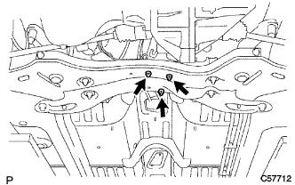
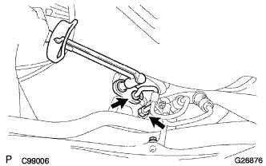

Stabilizer bar FR installation |
| 1. Stabilizer bar FR installation |
Attach the left and right front stabilizer barb -shuing No.1 to the outside of the identification mark of the stabilizer bar.
 |
With four bolts, the front stabilizer bar is attached to the front suspension cross member via the front stabilizer barcetto No.1 LH and RH.
| 2. Front stabilizer bolt mounting |
Four front stabilizer barcussia retener No. 1, 4 front stabilizer cushions, front stabilizer barcede retainer No.2 and front stabilizer bolt.
Fix the stabilizer bolt with a spanner (10mm) and attach it with two new nuts.
 |
The opposite side is attached in the same procedure.
| 3. Front suspension cross member SUB-ASSY installation |
 |
Support the cross member with a mission jack.
With four bolts, the cross member is tentatively attached to the body.
Insert the SST into the criteria of the cross member RH side and the vehicle RH side, and temporarily tighten the bolt while adjusting the bolt hole position.
 |
The SST is inserted into the cross member LH side and the vehicle LH side, and the two bolts are temporarily tightened while adjusting the bolt hole position.
The SST is inserted into the cross member RH side and the vehicle RH side and tightened with a specified torque.
The SST is inserted into the criteria LH side and the vehicle LH side and tightened with a specified torque.
Remove the mission jack from the cross member.
|  |
With two bolts and two nuts, attach the engine mountain mounting in -sijerter RR to the cross member.
Remove the sling device and chain block.
| 4. Front suspension arm SUB-ASSY LWR No.1 LH installation |
Attach it to the steering knuckle of the Lower Arm ASSY and tighten it with a castle nut.
Attach a new clip.
| 5. Front suspension arm SUB-ASSY LWR No.1 RH installation |
| 6. Pressive tube associated |
 |
Temporary Pecha Feed Cheube ASSY to the steering link asser.
In the bolt, attach the cramps of the Betsu Shiya Fweed Uve ASSY to the cross member.
|  |
Use Union Nut wrench 17 to tighten the Betsushiya Fweed Uve ASSY.
| 7. Tie rod end sub-assy LH installation |
Attach the tie rod end to the steering knuckle and tighten with a castle nut.
Attach a new cottal pin.
| 8. Tie rod end sub-assy RH installation |
| 9. Engine Anda cover LH installation |
With two screws and two bolts, install the engine undercover LH.
| 10. Engine Anda cover RH installation |
With two screws and two bolts, attach the engine undercover RH.
Tighten the nut.
| 11. Installation of front tires |
| 12. Steering sliding York SUB-ASSY connection |
 |
Attach clip A and attach the hole cover and clip B to the body.
 |
Match the matching mark and attach the sliding yoke with bolts.
 |
Remove the seat belt for the steering wheel rotation prevention.
| 13. Steering column hole cover plate installation |
Attach the hole cover plate with two clips.
| 14. Power steering fluid replenishment |
| 15. Power steering fluid air |
reference)| 16. Front wheel alignment inspection / adjustment |
reference)